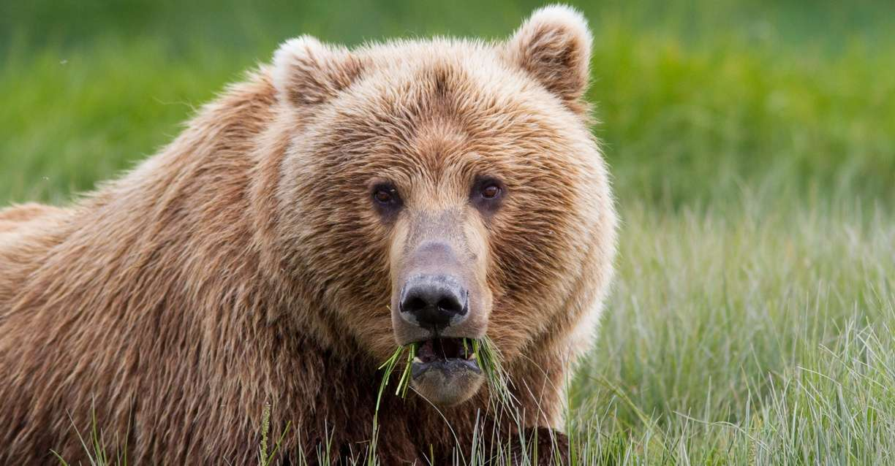
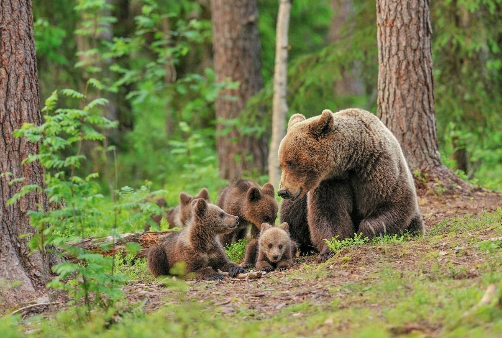

Gấu nâu
Đặc điểm ngoài tự nhiên
Gấu nâu là một loài động vật có kích thước lớn thứ nhì trong bộ ăn thịt. Gấu nâu có lông màu từ vàng hoe, nâu, đen hay tổ hợp của chúng; những chiếc lông dài bên ngoài thông thường pha trộn với màu trắng hay bạc, tạo ra ánh màu "nâu xám".
Tập tính cơ bản
Là động vật ăn tạp, chúng ăn rất nhiều chủng loại thức ăn khác nhau, bao gồm quả mọng, rễ cây và chồi cây; trái cây, nấm; cá, cá hồi, côn trùng hay các động vật có vú loại nhỏ như thỏ, sóc, chồn, chim. Tuy nhiên, chúng cũng đôi khi tấn công cả động vật lớn như nai sừng tấm, tuần lộc, cừu núi và bò rừng bizon.

